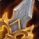

دیتاماین آیتمهای جدید Trading Post در پچ 12.1.7 PTR
در جدیدترین بیلد سرور آزمایشی پچ 12.1.7، آیتمهای تازهای برای Trading Post دیتاماین شدهاند که شامل مانتهای جدید و ستهای ترنسموگ هستند.

دیتاماینهای اخیر روی پچ 12.1.7 PTR از اضافه شدن آیتمهای متعدد به Trading Post خبر میدهند. در میان این موارد، ۳ مانت جدید به چشم میخورد که یکی از آنها  Savage Ebony Battle Turtle مربوط به پروموشن شرکت Steelseries در آگوست ۲۰۲۴ است.
Savage Ebony Battle Turtle مربوط به پروموشن شرکت Steelseries در آگوست ۲۰۲۴ است.
مانتهای جدید دیتاماینشده
| نام مانت | هزینه (Trader's Tender) |
|---|---|
| Goldrinn Shrine Defender | ۶۰۰ |
| Winterspring Frostsaber | ۶۰۰ |
| ۵۰۰ |
ستها و سلاحهای Brutal
دو اینسمبل جدید با نامهای  Ensemble: Brutal Iron Armor و
Ensemble: Brutal Iron Armor و  Ensemble: Brutal Steel Armor هر کدام با قیمت ۷۰۰ عدد Trader's Tender برای ترنسموگ زره در دسترس خواهند بود. علاوه بر این ستها، مجموعهای از تجهیزات و سلاحهای Brutal شامل موارد زیر هر یک به قیمت ۱۵۰ عدد Trader's Tender فهرست شدهاند:
Ensemble: Brutal Steel Armor هر کدام با قیمت ۷۰۰ عدد Trader's Tender برای ترنسموگ زره در دسترس خواهند بود. علاوه بر این ستها، مجموعهای از تجهیزات و سلاحهای Brutal شامل موارد زیر هر یک به قیمت ۱۵۰ عدد Trader's Tender فهرست شدهاند:
- سلاحهای Brutal Steel Greataxe و Brutal Iron Greataxe
- تبرهای Brutal Steel Axe و Brutal Iron Axe
- چوبدستهای Brutal Steel Staff و Brutal Iron Staff
- سلاحهای Brutal Steel

Polearm و Brutal Iron Polearm - سپرهای Brutal Iron Bulwark و Brutal Steel Bulwark
- آیتمهای پشت Brutal Steel Backpack و Brutal Iron Backpack
سایر سلاحها و پوششهای ترنسموگ
علاوه بر اقلام یادشده، چند سلاح انفرادی شامل Crude Ogre Cleaver و Inevitable Doom و The Temple's Dark Bow نیز وجود دارند که هرکدام با قیمت ۱۲۰ عدد Trader's Tender عرضه میشوند.
قطعات پوششی دیگری با تِم Crimson و موارد دیگر نیز در این فهرست قرار دارند؛ از جمله  Rusty Chainkini با قیمت ۱۰۰ تندر، Crimson Gloomcap و Crown of Crimson Springflowers و Gunslinger's Crimson Lid هر یک به قیمت ۵۰ تندر، Bandit's Crimson Highboot به قیمت ۴۰ تندر، Crimson Dunecloth Vest و Crimson Dunecloth Skirt هر یک به قیمت ۳۵ تندر و Crimson Dunecloth Belt با هزینهٔ ۳۰ تندر.
Rusty Chainkini با قیمت ۱۰۰ تندر، Crimson Gloomcap و Crown of Crimson Springflowers و Gunslinger's Crimson Lid هر یک به قیمت ۵۰ تندر، Bandit's Crimson Highboot به قیمت ۴۰ تندر، Crimson Dunecloth Vest و Crimson Dunecloth Skirt هر یک به قیمت ۳۵ تندر و Crimson Dunecloth Belt با هزینهٔ ۳۰ تندر.
آیتمها و جزئیات
| NEW Ensemble: | Brutal Iron Armor Ensemble: Brutal Iron Armor |
|---|---|
| دسته: | Transmog Sets |
| قیمت: | 700 Trader's Tender |
| دسته: | Transmog |
|---|---|
| قیمت: | 150 Trader's Tender |
| NEW Ensemble: | Brutal Steel Armor Ensemble: Brutal Steel Armor |
| دسته: | Transmog Sets |
| قیمت: | 700 Trader's Tender |